Farming Changes the World
The first farmers of the Neolithic period and how they shaped human history
- Where and when the first farmers lived
- How farming changed the land, food, tools and jobs
- Why farming was a turning point in history
- Using the past simple to talk about the past
- Regular and irregular past verbs
- Comparing farming in the past and today
Warm-up: Look at Picture 1
Look carefully at the Neolithic farming village in Picture 1. Tick the 12 items you can find (watch out—two items do NOT belong in the Stone Age!), then click Submit Warm-up to unlock Section 1:

neolithic_farming_village.png) isn't showing yet. Pick it from your device to preview:
Record your spoken answer to these two questions, then click Submit Recording to compare with suggested answers:
1. What jobs are the people doing? (e.g., "I think this woman is cutting wheat.")
2. Is this village very old or modern? How do you know?
- Question 1: People are cutting wheat, looking after sheep, goats and a cow, cooking over a fire, weaving baskets, chopping and carrying wood, and storing grain.
- Question 2: This village is very old (from the Neolithic period / Stone Age). We know because there are no modern machines or electricity—people live in simple mud-and-thatch houses and use clay pots, woven baskets, and stone tools.
1. Farming Words
Drag each word from the Word Box into its matching definition (or click a word, then click a box). Complete all 6 to unlock 2. Reading!
2. Reading: Farming Changes the World
Intro (Paragraph 1): For a very long time, people did not have farms. They hunted wild animals and gathered fruit, nuts and seeds from wild plants. They moved from place to place to find food. Then, about 11,000 years ago, something very important happened: people began to grow their own food. This was the start of the Neolithic period. How did farming change the way people lived? What did they eat, and what work did they do?
Part A Where and when were the first farmers?
A1: The first farmers lived in Mesopotamia, a land between two big rivers, the Tigris and the Euphrates (Picture 2). Today, this area is part of Iraq and Syria. The land near the rivers was flat and fertile, and there was a lot of water, so it was a good place to grow crops.
A2: The first farmers planted grain crops such as wheat and barley. They also grew peas, lentils and flax. They ate the peas and lentils, and they used flax to make cloth for their clothes.
A3: At the same time, people began to domesticate animals. Before, they hunted wild sheep, goats, cows and pigs. Now they kept these animals on their farms, so they had meat and milk all year. However, farmers did not stop hunting completely. They still hunted wild animals, caught fish and collected fruit and nuts.
A4: Farming spread very slowly from Mesopotamia to other places. It reached the south of Europe about 2,000 years later.
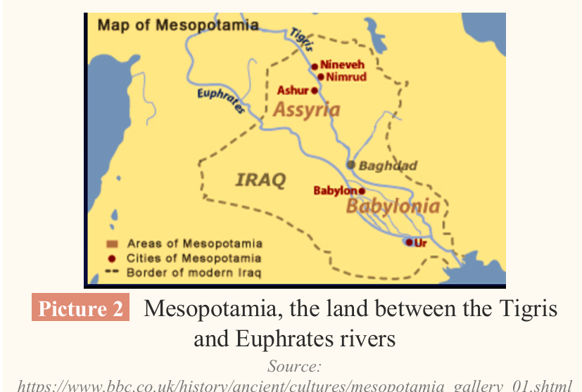
picture2.png) not loaded yet.
📍 Task 1: Pinpoint Mesopotamia on the map
Click on the map in two places to mark Mesopotamia (around Iraq & Syria). Two borders will appear to confirm your two spots!
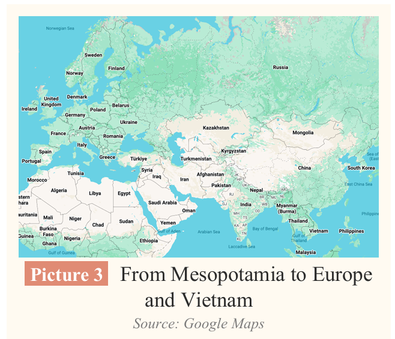
picture3.png) not loaded yet.
🌏 Task 2: Is Vietnam near or far from the first farms?
Look at the map on the left and compare Mesopotamia with Vietnam:
Part B Changing the land
B1: Farmers changed the land around them. They cut down trees and cleared the land to make fields for their crops. Their animals ate the wild plants and grass. To bring water to the fields, farmers dug long water channels from the river. Some farmers built a dam across a river to keep and store water.
B2: In places with hills, farmers made terraces. Terraces are flat steps of land on the side of a hill, so the rain does not wash the soil away. Farmers in Vietnam still grow rice on terraces today (Picture 4).
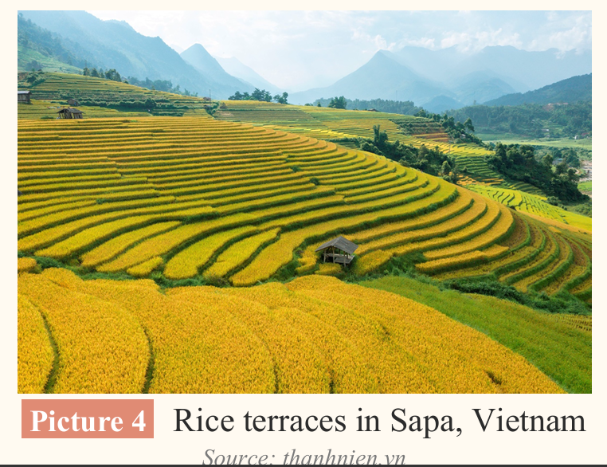
picture4.png) not loaded yet.
Part C Changing food
C1: Because people grew their own grain, they had more food. Farmers ground wheat and barley between two stones to make flour, and then they made bread and porridge. Their animals gave them meat and milk. Food was now easier to find, so families did not need to move any more. They built houses and lived together in villages (like the village in Picture 1).
Part D New tools and technology
D1: Farming led to new inventions. Later, farmers invented the plough, a tool that breaks up the soil so seeds can grow. Strong animals, such as cows, pulled the plough, so farmers could prepare a big field quickly. Some farmers in Vietnam still use buffaloes to plough their rice fields (Picture 5).
D2: Stone tools also got better. People polished their stone axes and blades, so they were smooth and sharp and cut better (Picture 6).
D3: People also learned to make pottery. They shaped wet clay into pots and bowls, and then they baked them in a fire to make them hard. They used the pots to store grain, water and milk (Picture 7).
D4: Farmers also made textiles. They made linen from flax, and they used wool from sheep and goats to make warm clothes.

picture5.png) not loaded yet.
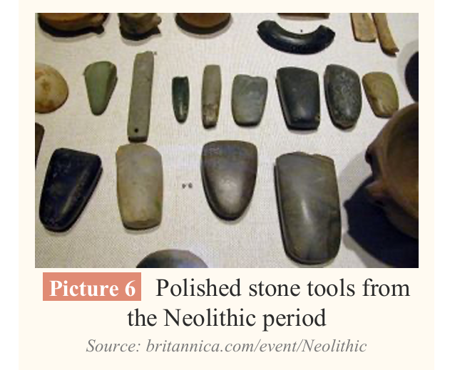
picture6.png) not loaded yet.
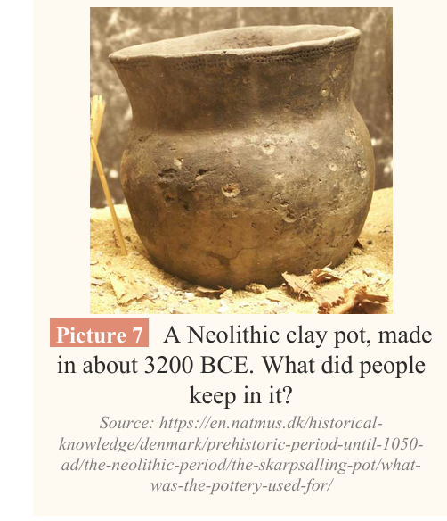
picture7.png) not loaded yet.
Part E New jobs
E1: In a farming village, there were many different jobs. Some people looked after the animals, and others worked in the fields. Some people became very good at making pots, so pottery became their special job. Sometimes a village grew more food than it needed. People traded the extra food with other villages for things they did not have, such as tools, special stones or animals. In this way, trading became another new job.
Click any audio bar to listen to the pronunciation.
Meaning: A plant that farmers grow for food.
Example: The first farmers planted crops such as wheat and barley.
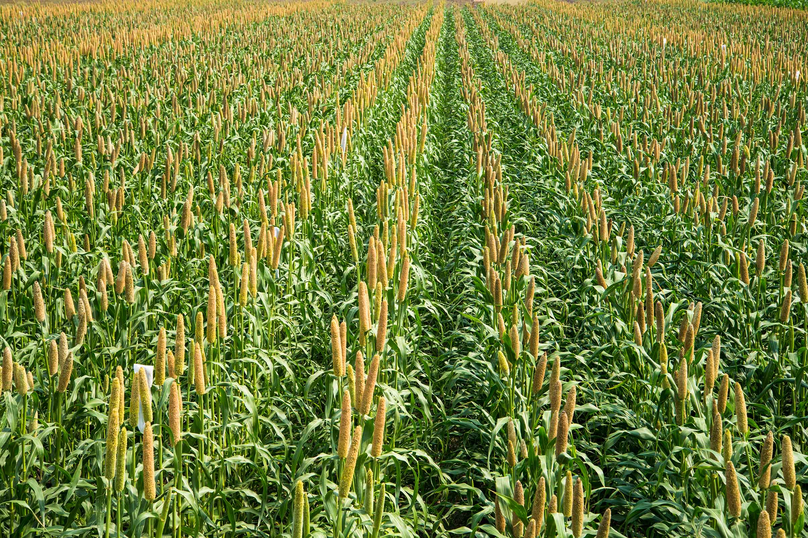
crop.jpgaudio_crop.mp3Meaning: A wall across a river that stops and stores water.
Example: Some farmers built a dam across a river to store water.
dam.jpgaudio_dam.mp3Meaning: To make a wild animal tame so it can live with people.
Example: People began to domesticate sheep, goats, cows and pigs.
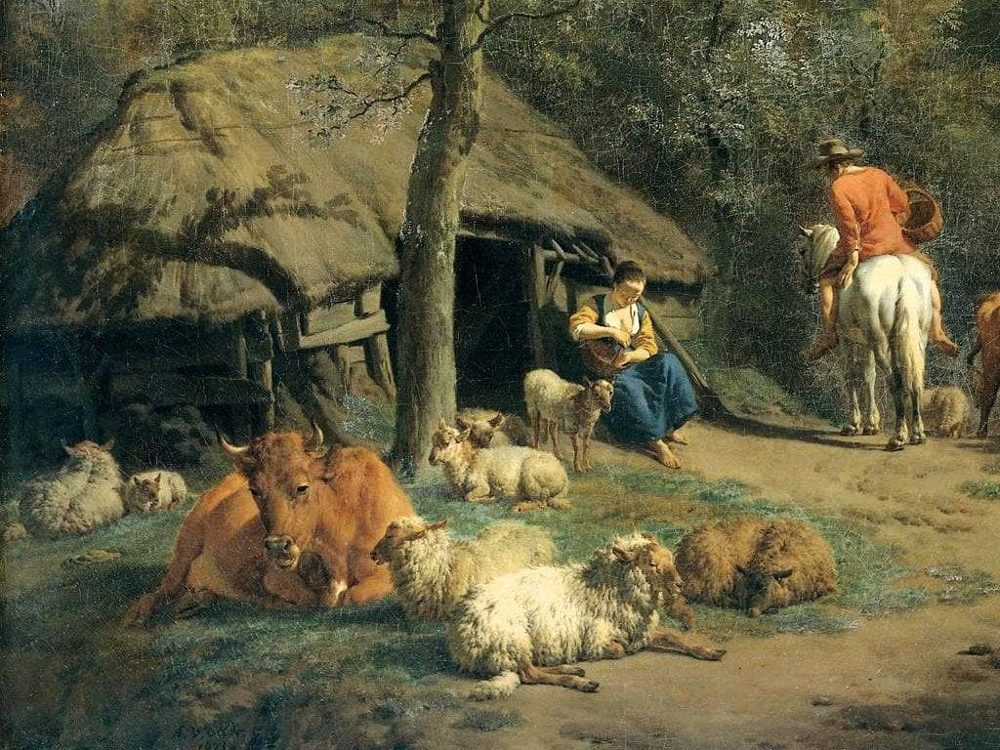
domesticate.jpgaudio_domesticate.mp3Meaning: Good for growing plants.
Example: The land near the rivers was flat and fertile.
fertile.jpgaudio_fertile.mp3Meaning: An area of land where farmers grow crops.
Example: Farmers cleared the land to make fields for their crops.
field.jpgaudio_field.mp3Meaning: The small, hard seeds of wheat, rice or barley.
Example: Because people grew their own grain, they had more food.
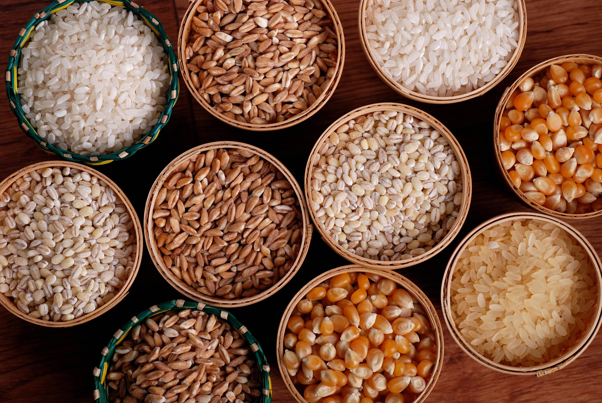
grain.jpgaudio_grain.mp3Meaning: A farm tool that breaks up the soil before planting.
Example: Strong animals pulled the plough through the soil.
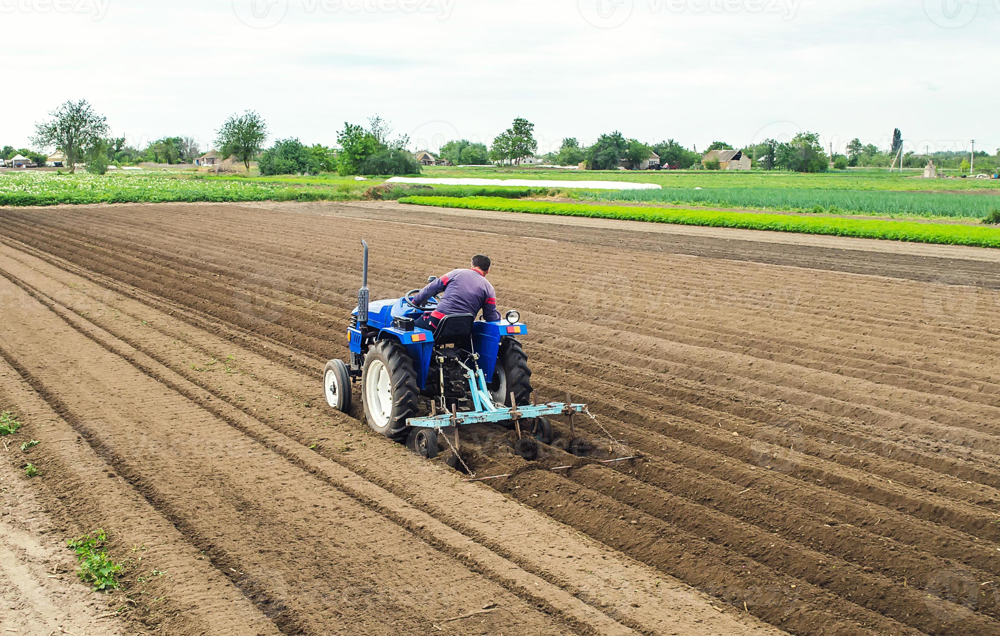
plough.jpgaudio_plough.mp3Meaning: Pots and bowls made from clay.
Example: People learned to make pottery from wet clay.
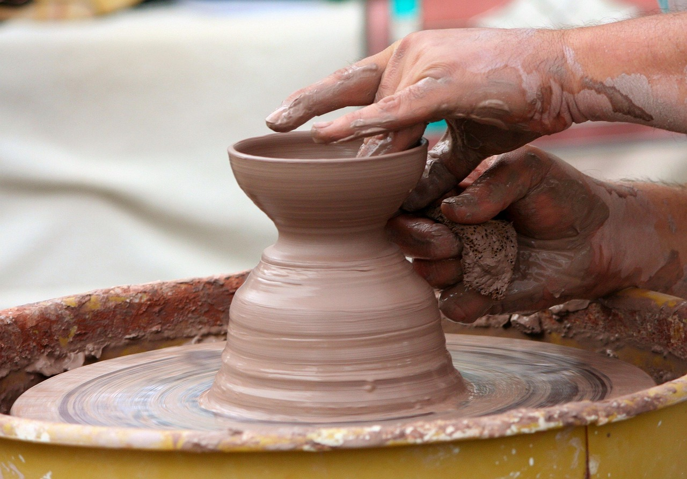
pottery.jpgaudio_pottery.mp3Meaning: A flat step of land on a hill.
Example: Farmers in Vietnam still grow rice on terraces today.
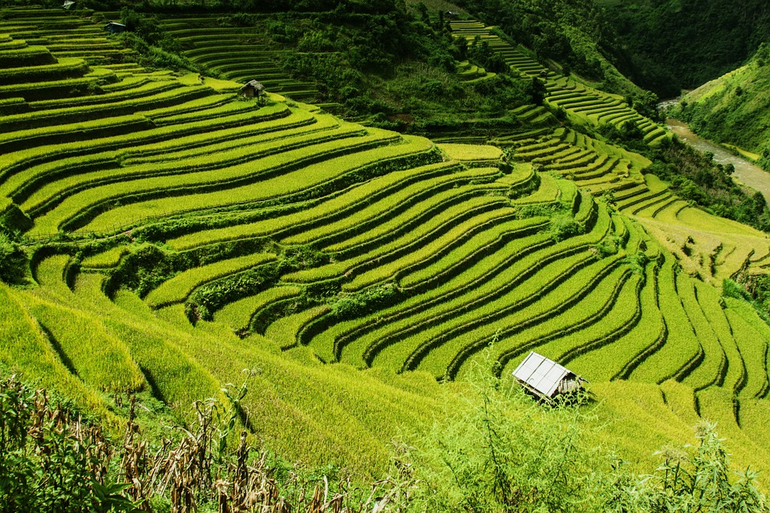
terrace.jpgaudio_terrace.mp3Meaning: Cloth, e.g. linen or wool.
Example: Farmers made textiles such as linen and wool for clothes.
textiles.jpgaudio_textiles.mp3Meaning: To give something and get something in return.
Example: People traded extra food with other villages.
trade.jpgaudio_trade.mp3Meaning: A long, narrow way for water from a river to a field.
Example: Farmers dug long water channels from the river.
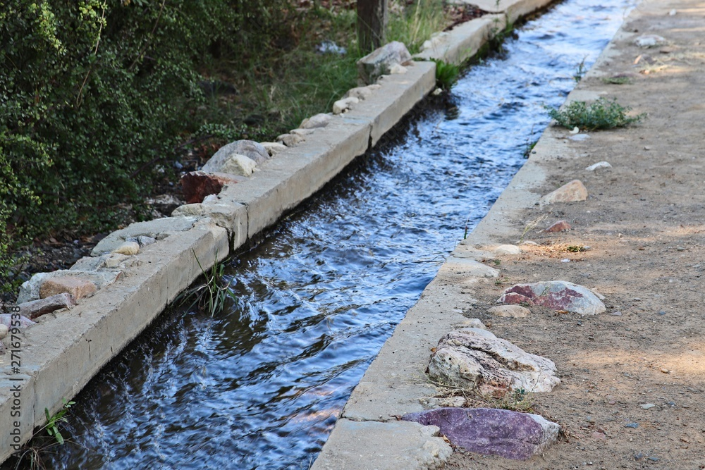
water_channel.jpgaudio_water_channel.mp3Meaning: Before the Common Era.
Example: The Neolithic clay pot was made in about 3200 BCE.

bce.jpgaudio_bce.mp33. Check Your Understanding
Task A Complete the fact file (Gap-fill from Part A)
| Fact file: the first farmers | Your answers |
|---|---|
| Where? | Mesopotamia (today: and ) |
| When? | about years ago |
| Why was it a good place? | The land near the rivers was and , and there was a lot of . |
| Crops | wheat, , , and |
| Animals | , , and |
| Food they still collected | wild , , and |
Task B Complete the timeline (Gap-fill)
Task C Complete the mind map (How did farming change people's lives?)
Use information from Parts B–E. Write 2 more ideas in each branch box (max. 5 words each).
🌲 The land
- • They cut down trees.
🍞 Food
- • They made bread.
🛠️ Tools and technology
- • They invented the plough.
🧑🌾 Jobs
- • Some people made pots.
Task D Be a good historian
Good historians look for turning points—big changes that altered how people lived. Complete the comparison chart and reflection, then submit to compare with suggestive answers:
| Before farming, people... | After farming, people... |
|---|---|
| moved from place to place. | lived together in villages. |
| hunted wild animals. | |
| gathered wild seeds. | |
| made pots and cloth. |
- Hunted wild animals → domesticated and kept animals (sheep, goats, cows, pigs) on their farms.
- Gathered wild seeds → planted and grew their own grain crops (wheat, barley, peas, lentils, flax).
- Before making pots and cloth → used simple stone tools and wore animal skins / gathered wild plants.
- Turning point conclusion: Farming was a turning point because people produced their own food, stopped moving from place to place, built permanent villages, and developed new tools and jobs.
4. Language Focus: The Past Simple
1 Click all past simple verb forms in Reading Part 2
Read Part 2 of the reading text (Parts B–E) below and click on every past simple verb you find (23 verb occurrences across 17 unique verbs). Then click Check Clicked Verbs to unlock Step 2!
Selected words: 02 Categorise into 2 groups: Regular vs. Irregular
Drag each past simple verb you found into the Regular or Irregular column (or click a word, then click a column):
3 Type the base form of each verb (2 columns)
Great sorting! Now type the base form (bare infinitive) for each verb in the Regular column and the Irregular column:
📘 Remember: The Past Simple
plant → planted, live → lived, carry → carried, stop → stopped
grow → grew, make → made, keep → kept
Negative: did not + base verb (They did not stop hunting.)
Question: What did they eat?
4 Choose the correct answer
1. The text is mainly in the past simple because...
2. "Today, this area is part of Iraq and Syria." The writer uses is, not was, because...
3. Which words tell us when in the past?
4. "Farmers did not ______ hunting."
5. Which question is correct?
5. Practice
5A Starting a Stone Age farm
Type the past simple of the verb in brackets, and drag a word from the Word Box into each blank (one word in the box is extra!):
5B Speaking: Interview a Neolithic farmer (Voice Recording)
Work in pairs. Student A asks the question using did, and Student B records the answer as a farmer from 10,000 years ago:
| Student A: Questions | Student B: Record Your Spoken Answer |
|---|---|
| Where / you / live? → Where did you live? | Example: "I lived in Mesopotamia, near the river." |
| What crops / you / grow? |
|
| What animals / you / keep? |
|
| What / you / eat? |
|
| How / you / make your clothes? |
|
| you / still / hunt? |
|
- What did you grow? I grew wheat, barley, peas, lentils and flax.
- What animals did you keep? I kept sheep, goats, cows and pigs.
- What did you eat? I ate bread, porridge, peas, lentils, meat, fish, fruit and nuts.
- How did you make your clothes? We used linen from flax and wool from sheep and goats.
- Did you still hunt? Yes, we did. We still hunted wild animals and caught fish.
6. Project: Farming in the Past and Today (Groups)
Make a short video or an infographic to compare farming in the Neolithic period with farming in Vietnam today.
- 1. Choose two farms in Vietnam: Choose one farm with modern technology and one farm with simple tools. Find out where they are (city or province), what they grow, what tools or machines they use, and what jobs people do there.
- 2. Collect your information in a chart: Compare Neolithic farmers (11,000 years ago), Farm with simple tools today, and Farm with modern technology today across Where?, Crops, Animals, Tools/technology, Water, and Jobs.
- 3. Same or different? Sort your ideas into Only in the past, In the past AND today, and Only today.
- 4. Useful language: Neolithic farmers used stone tools. They did not have machines. Farmers in An Giang use machines to cut rice. In the past... but today... Both... and...
- 5. Checklist: Compared crops, animals, tools, water and jobs • Used the past simple for the past and present simple for today • Used at least 6 farming words • Added pictures with captions.
Enter your name and class, upload an infographic image or paste a link to your video/infographic, and click Save & Report to Teacher.